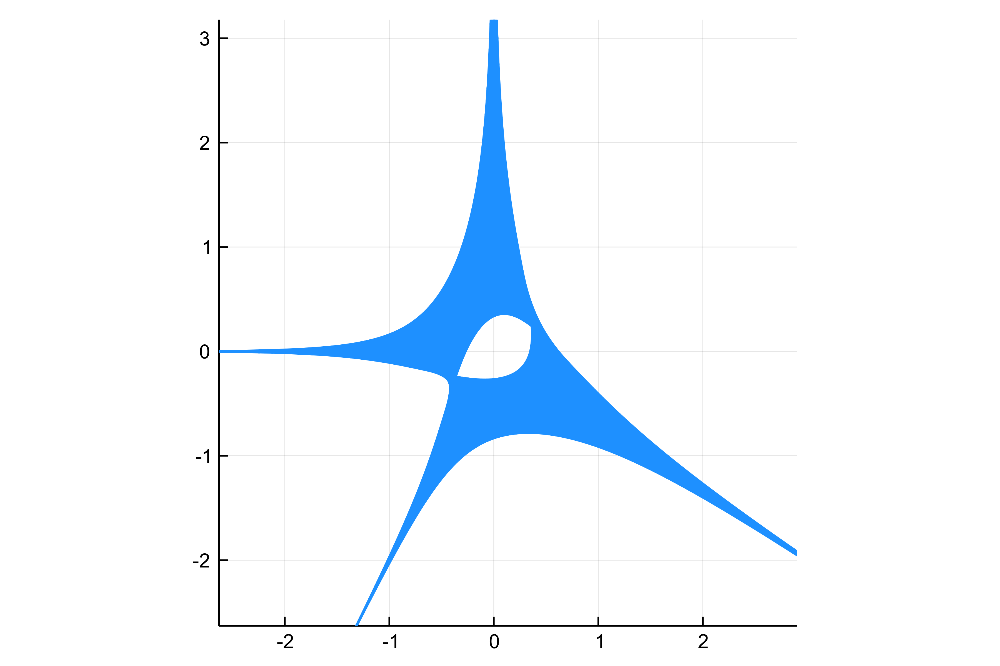

Amoebas.jl
Amoebas.jl is a package to compute and visualize the amoeba, coamoeba and imaginary projection of bi- and trivariate polynomials as well as the contour and the spine of an two-dimensional amoeba.
Getting started
To construct polynomials we export the macro @polyvar from the DynamicPolynomials.jl package.
using Amoebas
# Create variables
@polyvar x y
# construct a polynomial
f = x^2*y + y^2 + 3x^2*y^3 + y^4 + x^4*y^4To compute the amoeba of f we then can simply do
A = amoeba(f)To visualize the amoeba we use the plotting capabilities provided by Plots.jl. Just do
using Plots
plot(A)and you obtain 